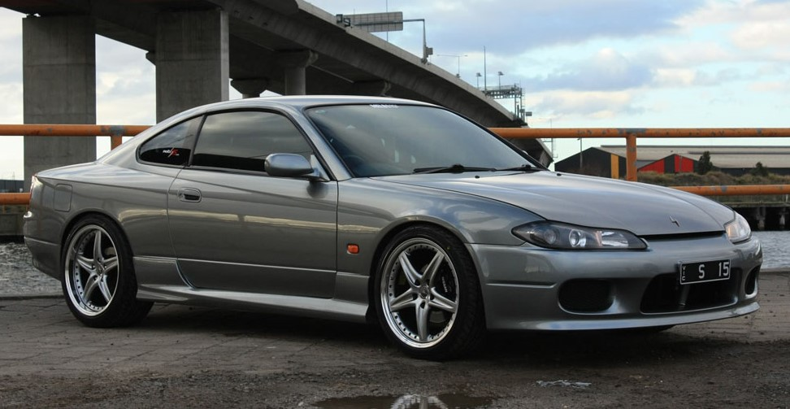

Nissan Silvia S15

A Nissan Silvia is basically a Nissan 240SX, but in Japan. Nissan created what they call the “S-platform”, which is Nissan’s rear wheel drive sort compact platform that they used from 1976 to 2002. The Silvia and 240SX used the “S-platform”, and the name Silvia was used interchangeably for all 240SX’s from 1989 to 2002, though production for the 240SX in the United States ended in 1998. The numerics also stand for the chassi used for the cars. think about it as if it was a 240sx but different looks and slightly different specs